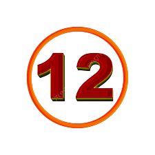
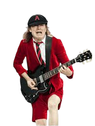
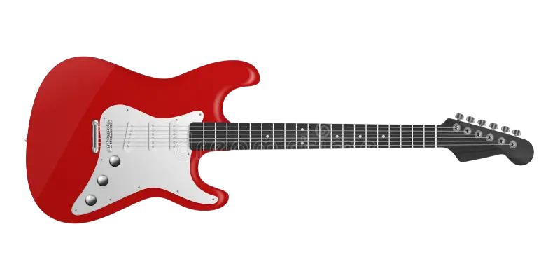
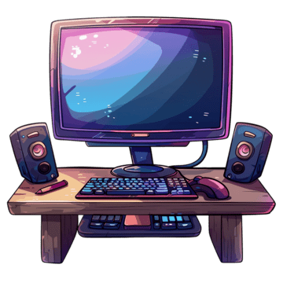
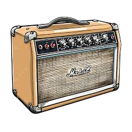
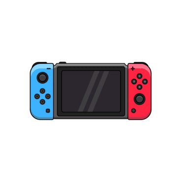
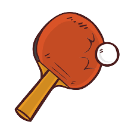
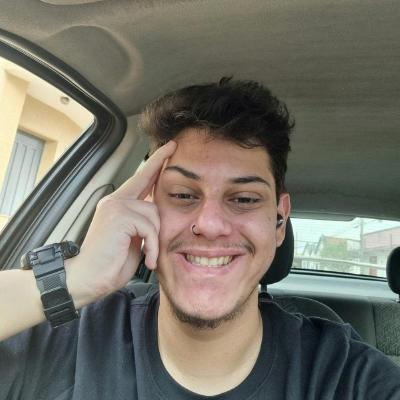

Desenvolvedor de Software | Criador do Projeto MAW | Apaixonado por Inovação
Engenheiro de Computação em formação pela FHO. Especialista em resolver problemas unindo lógica avançada e criatividade.
O maior reflexo disso é o meu projeto MAW, um sistema que nasceu da minha conexão profunda com a música, provando que o código é apenas uma ferramenta para expressar nossas paixões.
Sincronizando dados com a API do GitHub...